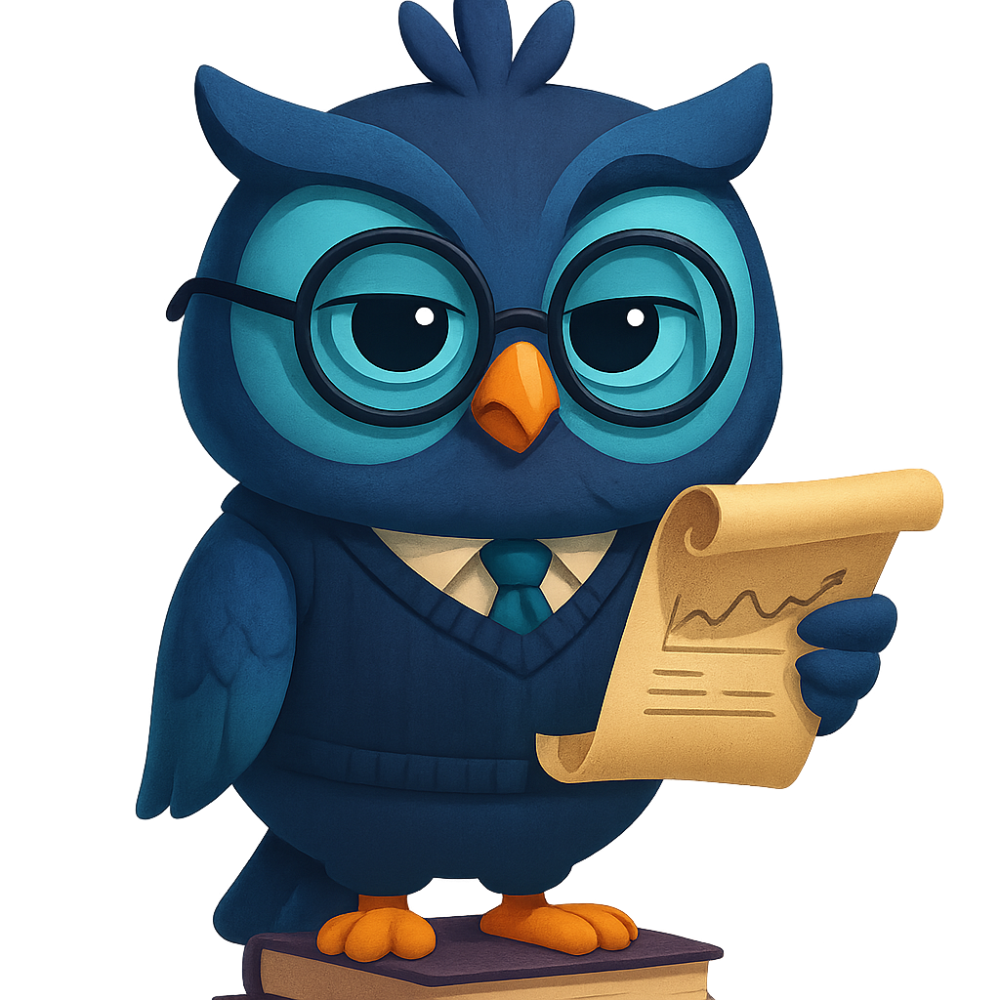

AI Tutor · OwlieMorning, Sarah 👋 Two things stand out today: your Normalization outcome slipped to 62% and it's on tonight's assignment, and you've got 5 reviews due. Want to spend 10 minutes closing that gap first?
Recent Conversations